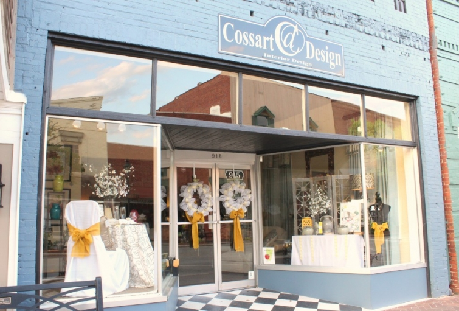
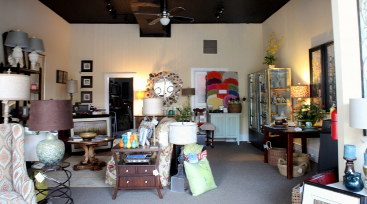

.png)
.PNG)
.PNG)
.PNG)
.PNG)
.PNG)
.JPG)
.JPG)
.PNG)
.PNG)


While I am on my string of “local” things, I thought I would give you a tour of some of the little shops in nearby downtown Perry. If you are ever traveling through Georgia on interstate 75, you might want to take a drive into town. It is not far at all from the exit, but you will have to pass the line of fast food restaurants – Zaxby’s, Chick-fil-a, Wendy’s, Sonny’s Bar-b-que, McDonalds, etc. There are several neat places to eat in the downtown area, so you might want to wait to eat there. (Of course, you could eat twice!)
So let’s take a peek at the shops first. Here is Cossart Interior Design all decked out in yellow for the Dogwood Festival.


Right down from it is Sugarplum Tree, a precious shop full of clothing for children of all ages.

Across the street you will find Impressions, a store that carries home accessories and a large line of Vera Bradley bags.
Near it is Gentry Downtown Market. It carries hand dipped ice cream, old fashioned candies, and gifts. I bought my nativity set there last Christmas.
Another place to grab a bite to eat is City Flair/The Coffee Cup. It is a combination gift and coffee shop downstairs.
They serve coffee, sandwiches, hotdogs, and desserts downstairs. Take a look at part of their menu here:
Upstairs there is an area called the Library Lofts. This space is used for meetings, Bible study, and live music performances on certain evenings. It makes a great gathering spot.
Another place for an absolutely wonderful lunch is The Perfect Pear (near Gentry Downtown Market.)
And I do mean won-der-ful! They do a lot of catering, and one of the best filet mignons I have ever tasted was at a meal catered by them. It had a sauce on it that made me want to lick my plate (but I didn’t. Don’t worry. 🙂 ) Their desserts are divine with an assortment of chocolate cake, key lime pie, Krispy Kreme bread pudding, chocolate creme brulee, and more. I had their delicious tiramisu just today for lunch. I tried to take a photograph of their lunch menu through the window. I believe they do not serve lunch on Friday, so keep that in mind if you plan to dine there.

Now if you would prefer traditional Southern fare, head to the opposite end of the street. There you will find the Swanson Restaurant in a renovated old home. They have fried chicken, roast beef, turkey and gravy, and fresh vegetables among other things. In 2010 Garden and Gun magazine named them “One of the best chicken joints in the South.” Quite an honor.

I do like those things – especially the fried chicken, but my favorite meal to order at the Swanson is their lunch (only) special of quiche with fruit and a house salad. (It has fresh pear and pecans and a champagne vinaigrette.) And I also highly recommend their fried green tomatoes. They have a sandwich with fried green tomatoes I need to try some time. Oh, and they also bring the little biscuits to your table that are the ones I wrote about here.
Have I made you hungry? Sorry, but you can’t eat yet. I want to show you another shop in downtown Perry. It is called Two Friends, and it has housewares, cookbooks, and gifts that I like, and clothing and jewelry that my daughter likes. It is a dangerous thing for my budget when we go in there together!

Just look around here at all the goodies we could buy!

This is the table that I have been wanting my husband to build for years. (Or if he would like to just go buy it, that would be fine with me! 🙂 ) Isn’t it beautiful?


and one last one from Two Friends…(oh my..it is food again!)

I showed you James Farmer’s soon-to-open store in Downtown Perry a week ago, so I will just give you a look at his shop window now. He is located almost next door to Two Friends.

Don’t forget there is a giveaway going on here for James’ latest book, A Time to Cook!
 Time to Cook, Dishes from My Southern Sideboard
Time to Cook, Dishes from My Southern Sideboard
Leave a comment on this post or the prior two posts, and you are entered in the drawing. The giveaway closes at midnight Tuesday, April 23, 2013.
There are several other shops along Carroll Street and even another restaurant that I have not told you about. You will just have to visit the town and experience them yourself. 🙂 Several of you asked about where the chicken from our picnic came from in my last post. That my friends, came from a tiny chicken and seafood joint called Skipper Johns. But don’t go looking for a website…they don’t have one. Nor do they except credit cards, and I am not sure what year their cash register was made. 🙂 The only seating is at a picnic table outside since it is entirely a take-out place. It is just great fried chicken…and very old-school.

Now are you hungry? I will leave you with a food question to talk about today….
When dining out, do you have a favorite local restaurant that is not a chain restaurant?
We’d love to hear about it!
****************Giveaway is now closed.****************


.PNG)
For years, the New Perry Hotel put Perry on the map. Glad to see the downtown area now booming with excellent restaurants and shopping.
Perry is a really darling little town, how lucky you are to have so much so close to home. My town has less than 300 people in it even though we are the county seat. We are pretty excited at the moment that the local watering hole has changed hands and will be opening as a steak house and lounge this coming weekend. We’ve been without a local eating establishment for a couple of years now so it’s a BIG deal for everyone around here. They plan to have home style cooking so it sounds wonderful and we can’t wait to give them a try! I have to also second Theresalh’s vote for the Drover in Omaha, NE. I’ve been there several times over the years since I used to live there! She is also correct in saying there are lots of great places to eat there…I think there is an average of one eating establishment in that city for every ten people! Crazy!!
What a cute little town you live in! It looks like it could be a movie set for some really, cool little chick flick starring maybe Ashley Judd… or starring Kelly! It also sort of reminds me of a Southern version of the cute and quaint town in New England where I grew up…Bennington, Vermont. Even though I don’t live there anymore, I invite you to visit there someday when you have a chance. You know, in your spare time! Actually, you would love it…so, if you plan a trip to the Northeast one day, I would love to share some ideas of some neat, historical and picturesque places in Bennington I know you would enjoy visiting. Meantime, thanks for sharing Perry with us!
GREAT post! Perry is my favorite place around here!
I have lived in Georgia all my life and didn’t realize what a beautiful little town Perry was! I have been to the Georgia state fair and Mossy Creek festival but not to the town! I will definitely make a trip down there some time! Thanks for another chance to win the cookbook!
I got James’ book on wreaths yesterday from our library. It was the only one they had by that author.
Thanks for a great tour – wish it was closer so I could visit in person. I live in a town about the same size and while it has the potential for a unique downtown shopping area, that has yet to fully develop. There is a second area which includes a great restaurant housed in a former train station and aptly named “Rails.” Our town has not had rail service for many years. The mix of fresh salads, entrees, desserts and wine at Rails makes it my favorite special place to dine. The owners recently moved in an older building from a few blocks away and have outfitted the addition with a dessert shop, and a couple other retail shops. Donna
I’m feeling the need to jump on the I-75 south ramp and head down to Perry! What a beautiful town, the kind I dream of living in!
Who knows what tomorrow holds, maybe I’ll be fortunate enough to go there one day, at least a girl can hope!
What a beautiful and quaint town. My kind of shops and EATS!
We have tons of great places to eat out at here in Omaha. One of our favorite spots is called The Drover. It is a small steak house. Low ceilings, fireplaces, and old cowboy decor. The make the best Whiskey marinated filets! They melt in your mouth.
Touring and tasting in Perry just might have to be on my to do list!
I was in downtown Perry today for my book-club meeting. We had lunch at The Perfect Pear. It was my first time there and it was wonderful! Of course I had to peruse the pretty shops afterwards 🙂 Tried on a few pretties, but fortunately (for my sweetie) no purchases were made – this time. Maybe one day our paths will cross, since we’re Middle Georgia neighbors.
Thanks for telling us where the chicken came from. I passed Skipper Johns on my way home and wondered… Looking forward to giving it a try.
I have 2 favorite places to eat, one is the Atria, but there is more than one so I guess it is a chain. The other is Speers Street Grill and it is in a old victorian home and food is wonderful. I live one mile from the house I grew up in and any more I don’t appreciate my surroundings and what the area has to offer….thanks for reminding me with your posts. Your area seems so much nicer but southern Pennasylvania still has a lot to offer.
Oh, and I would love to win the book.
Have a great day!
Jeanne
I have been by Perry many times on trips to Florida but never stopped. I will make it a point to stop next time. Thanks so much for the info!
Oh my! Your post reminds me of Downtown Ocean Springs, Mississippi!!! Quaint Shops, coffee, a stroll and I are good, good friends!!! I’m going to have to think about the food, I like just about everything!
Hello, if you are ever up north in Erie, Pa, a favorite place for us to eat is Valerios. It is a local Italian restaurant, nothing fancy but great and reasonable food. Would love to win the giveaway and enjoyed the tour of your town. Mickey
thank you, Kelly, for the tour of Perry. Looks like a great place. Well I’m married to a guy that does not like chain restaurants. Therefore, when we have the opportunity, we will go local. Anything that has a great cup of coffee and maybe a great muffin, I’m there!
You should tell everyone after they pick up Skipper John’s to go around the corner and grab a red velvet cupcake from Yoder’s Sandwich Shop… 🙂
Wow, Perry is a lovely town, I would love to visit. My husband and I also live in a small town of about 16,000 people in MS. We love all the local restaurants that we have and always prefer them over the big chain types. We have a restaurant here called Nighingales Pantry that is wonderful. It is all local foods with fresh bread made daily. They also have pantry items too such as fresh spices, jams and desserts made fresh daily. If you are ever in West Point, MS. come see what our small town has to offer.
Thanks for the wonderful giveaway too!
Looks like a fun place to visit! Thanks for the tour!
Your town looks like it would be so much fun to explore!
What a darling town you are so lucky!
Perry seems like a perfect weekend getaway spot! Lots of yummy restaurants to try and plenty of shopping. My favorite local place to eat at is called Madison’s cafe. It is located in our downtown area and is walking distance from the state Capitol (Jefferson City, MO).They serve Italian dishes and are always trying out new seasonal fare. They have a house salad that has artichoke hearts in it as well as all the traditional Italian favorites. We don’t go as often as I’d like but on special occasions my husband will bring the food home for us as they have everything avaliable for carry out as well. They do tons of catering and we have used them for parties and showers etc. WE even had our rehersal dinner there 14 years ago. If your in the area try it! You’ll love it. Mood lighting and fresh flowers on every table from the florist next door.
Perry is full of all kinds of wonderful temptations! And I bet it really shines at Christmas! On our next trip up to North Carolina, we definitely need to take a detour. Thanks for sharing your hometown with us.
What a lovely town! I’ll have to bookmark this for the next time I’m in that area. We hardly ever eat at chain restaurants…Local is always our first choice. My favorite one locally is called Social and it’s family style dining and all farm to table gourmet choices. 🙂
I had never heard of James Farmer,until your recent post. Then I saw him with Paula Deen Saturday morning. I fell in love with him! What a sweet, warm and wonderful man. I love going out to dinner, and in Chicago we have plenty to choose from. Our sentimental favorite is SuperDawg, a well known hot dog joint, that has been in business since the 50’s. Thanks for another great post!
What a great post! (But then your’s always are!). I WILL stop in Perry next time I am that way!
Here in Griffin (sorta just up the road from you – well, a couple of hours. . . ) my favorite non chain “lunch restaurant” is Mill Towne Gourmet on N. Hill Street. Yummy sandwiches, salads, and desserts – come see us some time!
I know you are a super teacher – and as a retired teacher myself that this is getting to be that crazeee time of the year – hang in there!
EHB
I had to smile when I read your line about the the sauce on the filet mignon, I had a similar experience at a local steakhouse. A friend told me about Zip Sauce
http://www.zipsauce.com/order-online/. It’s amazing, a little expensive but it goes a long way.
Perry looks like a wonderful town that I could spend days visiting. The shops look so interesting, I work in retail and love seeing pictures of stores and their displays. Thanks for the tour.
How can your postings get better and better?! Love looking at your home town and hearing about all the shops!! It was almost as fun as a shopping spree! My daughter and I go to a Cuban eatery “Chicken Time” in a small town north of us between The Villages and Ocala. We always get the same thing each time because we enjoy it SO much! It is roast chicken, rice with red or black beans, ? Flat bread and sweet plantains!! Just wonderful! We say we are going to try something new BUT never do! Now I must go back and reread your posting– don’t want to miss a thing!!
Thanks for showing us Perry, looks like a town I would enjoying visiting.
I watched the Paula Deen show with Jamie Farmer, he is adorable. He and Paula where so cute together. Thanks for lettings us know about the show.
Really would love winning his cookbook.
Little towns with unique little shops like that are so much fun. I love to spend the day with a girlfriend going from place to place – with lunch in the middle. Two Friends looks like too much fun!
Would love to visit Perry! Our area is saturated with franchises…pooh! Thanks for the chance to win…..have a good week!
Wow! What a charming place to live! And thank you for the “food tour” as well Kelly!
Kelly,
What a charming town you live near. I love the fact that there are fun places to eat and great places to shop and they appear to all be within walking distance of each other. I love southern fried chicken, my grandma used to make the best. I’ll have to fly in and try some in your neck of the woods. 😀
Thanks for the tour.
Karen
Wow! Obviously, it’s been a while since I’ve driven through ‘downtown’ Perry! I had no idea all these sweet little places existed. I will definitely have to exit off of 75 and go further than Chik-fil-A next time. 😉 And…when the girls and I make it up there to check out James Farmer’s place (when he opens), we will have to treat ourselves to a yummy luncheon at one of these charming restaurants.
BTW, I think the Houston Co./Perry Chamber of Commerce needs to hire you after you retire from teaching. LOL
Have a blessed week,
Amy
Oh my goodness…I had no idea that Perry had all those wonderful shops. With my love of Pears, the Perfect Pear caught my eye right away!! My aunt in north Georgia is always looking for a day trip so Perry would be perfect. They live in Chatsworth, Ga just about two hours from Perry. Maybe she will take me along!!
I live in an Iowa town of around 12,000 people. That means I live far, far away from you and in an area with both a different climate and different customs. Nonetheless, I greatly enjoy following your blog.
Yes, our family has favorite local restaurant that is not a chain restaurant. It is Taso’s. The food choices are plentiful, the food is remarkable, and all its people are fabulous. It always reminds me of Cheers, a local gathering spot and “a place where everyone knows your name.” Thanks for letting me share it with you.
Perry has a cute downtown. Glad to see it thriving rather than empty, like so many Georgia towns! Precious. Will have to make a point to visit James Farmers’ new store when headed south sometime.
-Trish
Thanks so much for the heads up on Perry! We are leaving Naples, FL on Sunday to drive back to Naperville, IL on Sunday. We’ll go 75 all thru Georgia…and depending on the time of day when we get there, we’ll definitely have to stop and stretch ours…and our two bearded collies…legs! We do love eating at local restaurants and have faves in Naples and Naperville!
Wow, I’m ready to come to Perry! I love restaurants and shops like these. I’m excited about the cookbook give-a-way! Thank you!
If you are ever passing through Seneca, SC stop by Seneca Family Restaurant. Seems like a hard working bunch of people running this place and the food is home cooking.
Enjoyed your tour of Perry. Definitely feel that I need to add this to my places to visit. Winston-Salem, NC has many wonderful restaurants in its downtown, so it is hard to pick just one or two.
I love reading your blog and your photographs are just beautiful! I’m definitely stopping in Perry, so charming!
Wow, I need to plan a trip to Perry! Thanks for the tour.
Kelly, what a beautiful display of all that is good and special in Perry. Even though I experience the small town charm of Perry each day, seeing it through the fresh eyes of the camera lense just made me nostalgic and yes, hungry. I love, love the tea biscuists at the Swanson. Isn’t it nice to be able to go to a restaurant like the Swanson and the Perfect Pear and still eat a southern meal with real tablecloths, real cloth napkins, and great Southern Hospitality? The Perfect Pear has a grilled pimento cheese sandwich that is divine. Skipper John’s chicken is the BEST; thank you for the idea of using it for a picnic lunch. Another hometown eatery that is delicious is McCall’s in nearby Warner Robins. They are only open for lunch Monday through Friday. Their pasta salad is my favorite and the pina colada cake delicious. OK, now I am really hungry. Thank you for another beautiful posting!!!!
Perry seems like a sweet, lovely town. Thanks for the cookbook giveaway! My favorite local restaurant that isn’t a chain is a place called The Belvedere. Their menu largely features recipes of locally grown, organic produce. Everything tastes fresh and good. Thanks again! -Sheena at Sissies in the Kitchen